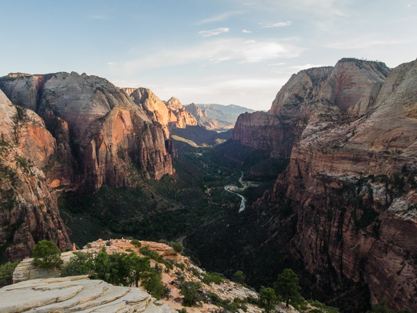

Zion and Bryce Canyon National Parks – Memorial Day Weekend
06.03.2016/By Justin Fricke/The Road
After trying to visit Canyonlands and Arches National Parks during free parks week, you would have thought we would have learned our lesson. Avoid national parks at all costs during holidays and big events. Well we didn't and decided we'd brave the crowds and hit Zion and Bryce Canyon National Parks over Memorial Day Weekend.
Big mistake.
Zion National Park
Original Photo Lost in the Archive
[filename not recovered]
From // Zion and Bryce Canyon National Parks – Memorial Day Weekend
If there's one National Park in Utah that we've been stoked about, it's Zion National Park. It's been photographed so well that we've really been amped on it and it's home to slot canyons, something we've never really experienced.
Once we won our green ticket that'd give us access to The Wave the next day, we booked it to Zion National Park. We arrived in the early afternoon to learn that there was no parking left at the visitor center and we'd have to park in Springdale, the city right outside of the park.
Wanting to pack in as much as we could, we hopped on the shuttle and got off at the Emerald Pool stop. It's an easy hike that led us to a neat waterfall that was packed with tourists. Did I mention it's an easy hike?
Next up was Angel's Landing. If there's one place in Zion National Park that you "have" to go to, it's Angel's Landing. Knowing nothing about this hike, I thought it'd be like Glacier Point in Yosemite National Park. A chill 300 yard walk on gravel would've been nice, but the hike to Angel's Landing is virtually straight uphill and the last bit requires you to navigate the side of a cliff with a chain to hold on to. It was anything but easy and with it being later in the day and a Thursday, it was surprisingly empty. We passed only a few people and had a majority of the summit to ourselves.

Saturday was different and the weekend was in full swing. Knowing that the main portion of the park would be swamped we headed to Kolob Canyon. We took in the sights at the main overlook and decided it'd be a great place to come back to later during golden hour. Once we cleaned out the van we headed to the Taylor Creek Trailhead to take on a mild 5 mile hike to pass the time. It was fun and didn't have to navigate around too many people.
Golden hour started to set in and we were at the right place at the right time. The overlook had been crowded earlier in the day and as the sun set, the crowds left. We had the entire overlook to ourselves and took full advantage of capturing every angle we could.
Bryce Canyon National Park
Original Photo Lost in the Archive
[filename not recovered]
From // Zion and Bryce Canyon National Parks – Memorial Day Weekend
Sunday was a different story all around. While we were at The Wave, a fellow lottery winner told us we could do Bryce in a day. That it's basically a scenic drive with a few places to pull off to see the canyon and hike into the canyon if we wanted.
With a late start to the day we got to the park and were told we had to park in the overflow parking lot of the overflow parking lot and take a shuttle bus into the park. No big deal until we got into the park and saw that we would be spending the day with thousands of our new best friends.
Initially we planned to stay at Bryce until the last shuttle bus, but after only an hour, we were over it. It was time to head back south to get some work done and get ready to go down to Arizona to pick up our girl, Jolene.
About Justin Fricke
Hi I’m Justin! I’m a 25 year old millennial that’s trading in his cool downtown office job that comes with all the benefits for a life on the road. I may not know my destination, but I’m strapped in and ready for the journey. Follow me @JustinLFricke